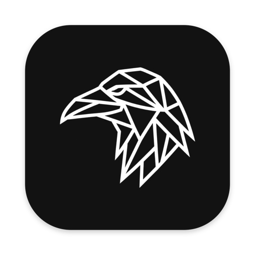

Rook
Kleine Werkzeuge, die deinen Mac besser machen. Alle in einer App in der Menüleiste, und du merkst sie nur, wenn du sie brauchst.
Notch
Die Notch kann jetzt was.
Fahr mit der Maus drauf, und sie klappt auf. Mit zwei Fingern drehst du weiter, wie auf einem Rad.
Musik
Cover, Titel und Steuerung. Ein Klick in die Zeitleiste springt an die Stelle im Song.
Screenshots und Ablage
Ausschnitt, Fenster oder ganzer Bildschirm. Dateien legst du auf der Notch ab und ziehst sie später weiter.
Timer und Termine
Den Timer stellst du mit Rädern wie am iPhone. Der nächste Termin steht direkt daneben.
Zwei weitere Seiten
Eine Schnellnotiz, die sich alles merkt, und die Lautstärke für jede App. Wenn du weggehst, ist die Notch wieder ganz normal.
Sperrbildschirm
Schon bevor du entsperrst.
Widgets
Musik, nächster Termin, Wetter, Akku und AirPods. Ruhig im Glas-Look, nur auf dem Sperrbildschirm.
StandBy
Hängt dein Mac am Strom, wird der Sperrbildschirm zur großen Uhr. Nachts in gedimmtem Rot.
Gewohnheiten
Wie du es von Windows kennst.
Wer vom PC kommt, vermisst ein paar Dinge. Rook bringt sie zurück.
Dock wie die Taskleiste
Klick auf die App, die vorne ist, und ihre Fenster fliegen ins Dock. Der nächste Klick holt alle zurück.
Cmd + Tab holt das Fenster
Ist das Fenster minimiert, kommt es zurück. Hat die App keins mehr, öffnet sie ein neues.
Lautstärke für jede App
Musik leiser, Videocall lauter. Jede App bekommt ihren eigenen Regler.
Mausrad und Trackpad getrennt
Die Maus scrollt wie gewohnt, das Trackpad bleibt natürlich. Auch beim Zoomen.
Downloads, die sich selbst sortieren
Bilder, Dokumente, Videos und Installer landen von allein im richtigen Ordner. Alte Installer räumt Rook weg.
Leistung
Du merkst Rook nicht.
Rook wird nur aktiv, wenn etwas passiert. Ausgeschaltete Funktionen laufen gar nicht.
Prozessor, mit allen Funktionen an
Arbeitsspeicher
Abfragen beim ersten Start. Gefragt wird erst, wenn du eine Funktion einschaltest.
Gemessen auf einem MacBook mit Apple‑Chip, bei geschlossenem Rook-Fenster. Kein Konto, keine Auswertung, deine Daten bleiben auf deinem Mac.
Rook Search
Der Browser dazu.
Auf der Safari-Engine, mit eingebautem Werbeblocker und einer eigenen, ruhigen Startseite. Du kannst ihn auch direkt in Rook laden.

Installieren
In einer Minute bereit.
Rook
- Rook.zip öffnen. Daraus wird Rook.app.
- In „Programme“ ziehen und öffnen.
- Einmal freigeben: Systemeinstellungen, Datenschutz & Sicherheit, bei Rook auf „Dennoch öffnen“.
- Fertig. Der Rabe in der Menüleiste öffnet alle Funktionen.
Rook Search
- Rook-Search.dmg öffnen.
- Rook Search auf „Programme“ ziehen und öffnen.
- Einmal freigeben: Systemeinstellungen, Datenschutz & Sicherheit, bei Rook Search auf „Dennoch öffnen“.
- Fertig. Oder einfach in Rook unter Einstellungen laden.
Warum „Dennoch öffnen“? Rook ist ein privates Projekt und nicht von Apple vorab geprüft. Der komplette Quellcode liegt offen auf GitHub.